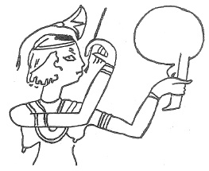

ŞEKİL 87. Eski Mısır duvar resminde, bir eliyle metal ayna tutan, öteki elindeki fırça ile
dudaklarına kırmızı aşı boyasından ruj süren Mısırlı kız (İÖ 1200’ler).3
Mısır, Yunan ve Roma makyaj, macun ve pudra sanatının, günümüz kozmetik sanayisi ürünleri karşısında belirgin bir zararlı yanı vardı: Makyaj sandığında yer alan ve gerçekte modaya uymak amacıyla insanların yüz, göz, ağız ve diğer beden kısımlarına sürdükleri bu maddeler, kısmen cildi tahriş edici bir özelliğe sahipti. Meleksi bir soyluluğun simgesi olarak solgun göstermek üzere yüze sürülen kurşun beyazı (üstübeç, bazik kurşun karbonat), yanak ruju olarak kırmızı fosfor, zincifre (civa sülfür) temelli dudak boyası, orpiment’ten (arsenik trisülfür) göz boyası, antimon sülfürden sürme, gözlerin parlamasını sağlamak için zehirli madde içeren güzelavratotu özü vb. şeklinde uzayıp giden bu liste, adeta zehir dolabından hazırlanmış bir reçete idi. O zamanlar Yunan güzellerinin gözlerindeki parlaklığın, göz suyu olarak önerilen, sirke içinde çözünmüş kurşun beyazıyla sağlanıp sağlanmadığı belli değildir. Böylesi birkaç maddenin zararlılığı, ilk kez tarihsel geri bakıştan biliniyor değildir. Günümüze aktarılan eski bir kaynakta, bir Yunanlı hekimin, civa içerikli kozmetiklerin zararlılığı hakkında uyarısı yer almaktadır.
Eskiçağda İmparator Marcus Aurelius’un (yön. İS 161-180) özel hekimi olan Galenos, koku alma sinirlerinin varlığını keşfetti. Koku maddelerinin yapı-etki ilişkileri İsa’dan önceki 1. yüzyılda Romalı doğa filozofu Titus Lucretius Carus (İÖ 96-55) tarafından saf spekülatif bir biçimde postule edildi. De rerum natura (Nesnelerin Doğası Üzerine) adlı eserinde belirttiği düşüncesine göre, hoş kokan madde atomları yuvarlak bir yapıya sahiplerken, kötü kokanlar keskin kenarlı ve dikene benzer bir tanecik yapısına sahip olmalıydı.169
Tüm Eskiçağ boyunca Arap yarımadasının güney bölgelerinden ithal edilen günlük, tapınma törenlerinde ve özellikle de büyü ve mezarlıkla ilgili alanlarda kullanıldı. Tarih öncesi Mısır’ından beri günlüğe, günümüzde Katolik ve Ortodoksların dini törenlerinde hâlâ olduğu gibi, tanrısal bir araç olarak mekânı ve insanları kötülüklerden arındırarak merhametli kılan ve gönüllere ferahlık veren bir kuvvet yakıştırılmıştır.
Aşağı Mısır’ın florası (bitki varlığı) koku bitkileri bakımından bir ölçüde fakirdi. Bu nedenle çoğu aroma maddeleri ithal edilmek zorundaydı. Yerli bitkilerden kazanılan kokulu eczalar arasında bir tür sakız ağacından (sedir ya da katran ağacı) elde edilen terementi reçinesinin tütsülemede kullanıldığı kesinlik kazanmıştır. Terementi reçinesinden daha keskin kokulu olan günlük, “Styrax” reçinesi ve laden (“Ladanum”, “Cistus creticus” ve “Cistus ladanifer” türleri) de ithal ediliyordu. Latincesi “Cedrus” olan sedir ağacı, bizde halk arasında katran ağacı olarak adlandırılır. Tarih öncesi dönemlerde Lübnan’da, Amanos ve Toros dağlarında yayılım gösteren sedir ağacı ormanları, önce Fenikeliler, daha sonra da Asur, Babil ve Persler tarafından önemli bir malzeme olarak saray ve tapınak inşasında, onun kök ve gövdesinden elde edilen katran ise gemilerin kalafatlanmasında, ayrıca da Mısırlılar tarafından cesetlerin mumyalanmasında yoğun şekilde kullanılmıştır.
Babil’de ibadet ve mezar törenlerinde fazla miktarda günlük, kırkboğum (topalak) ve sedir ağacı odunu kullanıldığı kaydedilmiştir. Dinsel törenlerde mür’ün yanı sıra kenevir yakılmasının belirli fizyolojik etkiler yarattığı kabul edilmektedir. Herodotos, Odysseia adlı eserinde, İÖ 430’larda İskitlerin ölü gömme törenleri sırasında hintkeneviri tohumlarını kızgın taşların üzerine koyarak yaktıklarını ve tüten dumanı solumaktan son derece keyif aldıklarını belirtmiştir.170
Tütsü kullanımı Kutsal Topraklar’da da belirli bir işleve sahip olmuştur. Eski Ahit’te, dinî tören gereksinimi için tütsü maddelerinin üretimine ilişkin şu reçete yer alır: “Balsam, ‘strakte’ (styrax, aselbent), kasnı ve günlük, eşit kısımlar halinde alınıp Tanrı’yı kutsamak üzere toz haline getirilecek şekilde dövülür”.
Roma İmparatorluğu döneminde İtalya’da çiftçilerin yerel kutlama ve şenliklerinde masalar taze nane yapraklarıyla ovuluyor ve içleri nane doldurulmuş yastıklar kullanılıyordu. Ortadoğu ile temaslardan sonra ve Yunan ve Mısır etkisi altında, tutucu çevrelerin muhalefetine karşın tütsü maddeleri kullanımı eski Roma’da akıl almaz boyutlara ulaştı ve akgünlük ve mür ithali devlet harcamalarına ağır bir yük getirdi. O dönemde Roma’ya yılda yaklaşık 2800 ton günlük ve 550 ton mür geliyordu. İmparator Neron, İS 54 yılında bir partilik koku malzemesine 100 bin Dolar eşdeğeri para ödemişti.5 Neron’un metresi ve ikinci karısı Poppaea Augusta Sabina (ölm. İS 65), cildini beyazlatmada kurşun beyazı ve tebeşir; gözkapağı ve kirpik için sürme; yanak ve dudak için kırmızı boya; sivilceleri gidermek için un ve tereyağı; dişleri beyazlatmak için de süngertaşı kullanıyordu. Poppaea’nın her gün, içine gülyağı katılmış eşek sütü ile banyo ettiği de söylenir. Neron, İS 65 yılında öldürülen karısı Poppaea’nın mezarında, Arabistan’dan getirilen ve Arapların 10 yılda ürettiklerinden daha fazla miktardaki akgünlüğü yaktırmış, oluşan tütsü dumanları mezarlık çevresinde haftalar boyu etkisini sürdüren güzel koku atmosferi oluşturmuştur. Aşırı parfüm kullanımı, sevimsiz olaylara da yol açıyordu ve talihsiz bir konuk, aşırı parfümlemenin yarattığı oksijen kıtlığından boğularak can vermişti.168
Gülsuyu elde edilmesi, ilkel damıtma yöntemiyle ve buharların soğuk bir yüzey üzerinde yoğunlaştırılmasıyla uygulanan bir İran sanatı idi. Bu işlem için, toplanan gül yaprakları, ondan gülsuyu, gülyağı ve gül esansının hazırlanacağı yere gönderilir; orada suyla dolu büyük imbiklere doldurulur ve saatler boyu kaynatılırdı. Su buharı eşliğinde yapılan damıtmanın ürünü olan sular kocaman şişelere doldurulur; üzerlerinden enjektörlerle alınan yağ kısmı, daha küçük ve tercihen koyu renkli şişelere aktarılırdı. Bir gram gülyağı elde edilmesi için, yaklaşık olarak dört kilogram gül yaprağı gerekmekteydi.
Damıtmaya ilişkin ilk değinmelerden birine, Romalı yazar Yaşlı Plinius’ta rastlanır. Naturalis historia adlı yapıtında, ilkel biçimdeki bir damıtma yardımıyla sedir ağacı odunundan uçucu (eterik, esansiyel) yağ elde edilmesini betimlemiştir.